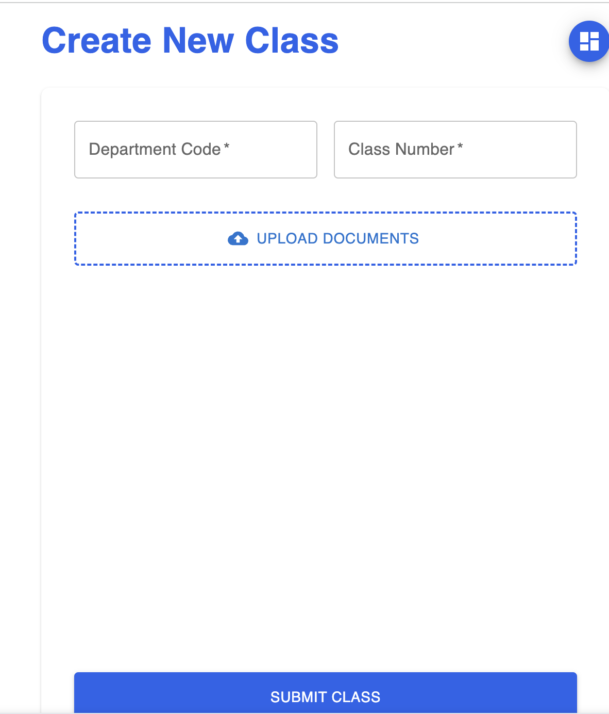

Chowder
Smart Course Management, Powered by Claude AI

Overview
Every college student dreads the first week of the semester: five syllabi, each structured differently, none talking to each other. Chowder solves this by automatically parsing course syllabi using Claude's API and extracting all deadlines, deliverables, and course expectations into a unified, personalized dashboard.
Students upload their syllabi (PDF or text), and within seconds their dashboard populates with a prioritized timeline of everything due — exams, papers, projects, readings — across all their courses. It's the personal academic assistant that should have existed years ago.
How It Works
Syllabus documents are passed to Claude's API with structured prompts that instruct it to extract: assignment names, due dates, point values, and course metadata. Claude handles the variability in formatting (some professors write syllabi in tables; others in prose paragraphs) gracefully.
Extracted data is normalized and stored in Supabase, then surfaced in a React dashboard with views organized by week, course, or deadline priority. Users can also add manual events and set personal reminders.
Current State
Chowder is in active development with a working prototype used by a small group of Stanford students. Current work is focused on improving extraction accuracy for edge-case syllabi formats, building out the mobile-responsive experience, and adding calendar integration.
Screenshots
